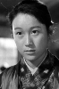

Also known as:座頭市地獄旅 (original title)
Country:Japan, 87 minutes
Spoken languages:Japanese
Genres:Adventure, Action, Drama
Director(s):Kenji Misumi
Writer(s):Daisuke Itō
Video Codec:Unknown
Number: 2818


Certification:
Storyline:
Zatoichi makes friends with a dangerous chess player, while fending off angry yakuza and bloodthirsty relatives out for revenge, and trying to save a sick child. Meanwhile, his luck with dice is turning.
Cast: 


Medium: Bluray,
Comments: Part of: Zatoichi - The Blind Swordsman collection
Loaned: No
Aspect ratio: Unknown